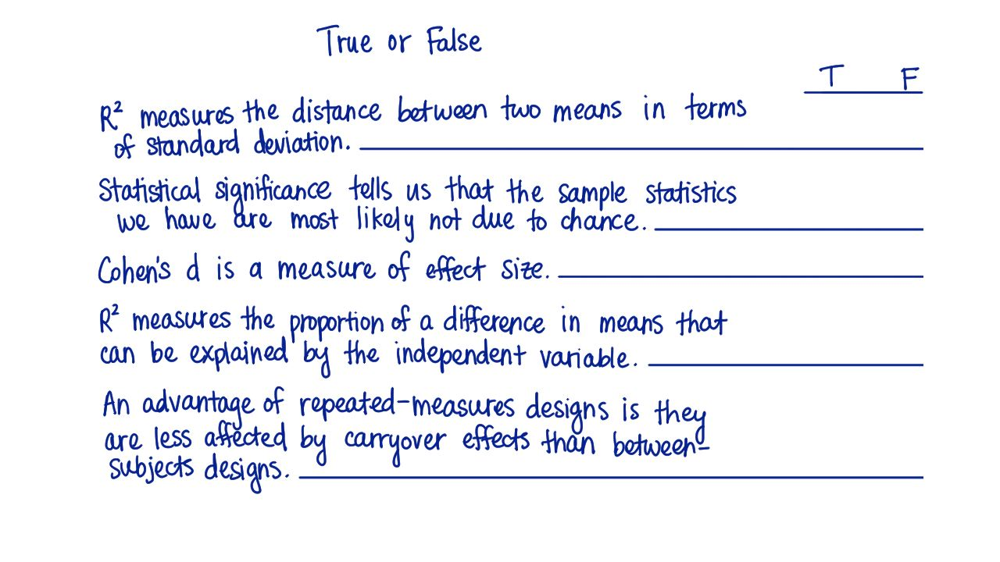

05. 8. 真或假？
- 真或假？
Start Quiz:

INSTRUCTOR NOTE:
下列说法中，哪些是正确的，哪些是错误的？
- R^2测量的是两组数据标准偏差的平均值的差值。
- 统计显著性告诉我们某样本的统计值的得出，很大可能性不是因为偶然。
- Cohen's d 是一种效应量大小的检验。
- R^2测量的是自变量的引起的差异在整体差异中所占的比例。
- 重复测量设计的好处是转移影响（carryover）小于主体之间between-subject的影响。